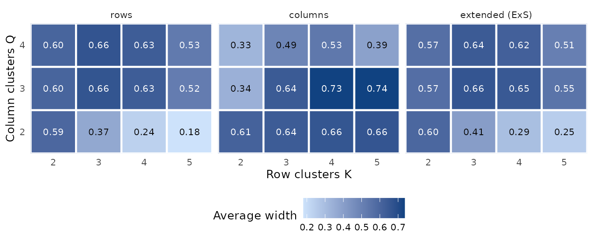

A block (or co-) clustering partitions more than one mode of a data
array at once, for example the rows and the columns of a matrix. Each
mode gets its own partition, and each partition can be scored with a
silhouette. extSilhouette() combines the mode-wise results
into the extended silhouette of Schepers et al.
(2008; see also Bhat Kapu and Kiruthika 2025). If mode \(m\) has \(n_m\) objects and average width \(\bar S_m\), \[
\mathrm{ExS} = \frac{\sum_m n_m \bar S_m}{\sum_m n_m}.
\] The weights are the numbers of objects, so ExS is the average
width over all clustered objects, each counting once, and a mode with
many more objects than another dominates the combined value.
extSilhouette(weights = "equal") gives every mode the same
weight instead, and a numeric vector sets the weights directly. This
vignette shows the workflow and what the weighting means in
practice.
library(Silhouette)
library(drclust)Data with a block structure
We simulate a \(150 \times 24\) matrix whose rows fall into four groups and whose columns fall into three, so that each of the 12 blocks has its own mean.
Silhouettes for a double k-means fit
Double k-means (Vichi 2001),
implemented in doublekm() of drclust (Prunila and Vichi 2025), approximates the data
matrix by \(U C V^\top\), where \(U\) and \(V\) are binary membership matrices for rows
and columns and \(C\) holds the block
means. The prototype of row cluster \(k\) is row \(k\) of \(C
V^\top\), and the prototype of column cluster \(q\) is column \(q\) of \(U
C\). Each mode therefore has a matrix of distances to its
prototypes, which Silhouette() accepts directly. We
recompute \(C\) by least squares from
\(U\) and \(V\) so that the prototypes match the fitted
memberships exactly.
block_sil <- function(Xs, K, Q, seed) {
set.seed(seed)
fit <- doublekm(Xs, K = K, Q = Q, Rndstart = 10, prep = 0)
U <- fit$U
V <- fit$V
C <- solve(crossprod(U), t(U) %*% Xs %*% V) %*% solve(crossprod(V))
list(rows = Silhouette(proxy::dist(Xs, C %*% t(V))), # n x K distances
columns = Silhouette(proxy::dist(t(Xs), t(U %*% C)))) # p x Q distances
}
modes <- block_sil(Xb, K = 4, Q = 3, seed = 1)
extSilhouette(modes, dim_names = names(modes))
#> ------------------------------------------
#> Extended silhouette (size weights): 0.6464
#> ------------------------------------------
#> Dimension summary:
#> dimension n_obs weight avg_sil_width
#> rows 150 0.8621 0.6323
#> columns 24 0.1379 0.7348The result holds the extended silhouette and a table of the number of objects, the share of the weight, and the average width for each mode.
Choosing the numbers of row and column clusters
We fit a grid of \((K, Q)\) and record the extended silhouette together with the mode-wise averages.
grid <- expand.grid(K = 2:5, Q = 2:4)
fits <- lapply(seq_len(nrow(grid)),
function(g) block_sil(Xb, grid$K[g], grid$Q[g], seed = g))
ext <- lapply(fits, extSilhouette)
grid$ExS <- sapply(ext, `[[`, "ext_sil_width")
grid$rows <- sapply(ext, function(e) e$dim_table$avg_sil_width[1])
grid$columns <- sapply(ext, function(e) e$dim_table$avg_sil_width[2])
grid[order(-grid$ExS), ][1:4, ]
#> K Q ExS rows columns
#> 6 3 3 0.6608322 0.6639725 0.6412055
#> 7 4 3 0.6464243 0.6322869 0.7347831
#> 10 3 4 0.6399489 0.6641385 0.4887635
#> 11 4 4 0.6189673 0.6326928 0.5331826
The extended silhouette is largest at \((K, Q) = (3, 3)\), while the data have four row groups and three column groups. The reason is the weighting: with 150 rows and 24 columns, the rows carry 86% of the weight, so the extended silhouette largely repeats the row averages, which barely depend on \(Q\) and here prefer fewer row clusters. The column averages carry the information about the column partition but can only tip close decisions.
When the modes differ greatly in size, report the mode-wise averages
alongside the extended silhouette, and consider how much weight each
mode should get. In this example the equally weighted extended
silhouette, extSilhouette(..., weights = "equal"), is
largest at \((K, Q) = (4, 3)\):
grid$equal <- sapply(fits, function(f) extSilhouette(f, weights = "equal")$ext_sil_width)
grid[order(-grid$equal), ][1:3, c("K", "Q", "rows", "columns", "equal")]
#> K Q rows columns equal
#> 7 4 3 0.6322869 0.7347831 0.6835350
#> 6 3 3 0.6639725 0.6412055 0.6525890
#> 8 5 3 0.5183600 0.7363131 0.6273365Equal weighting is not generally better; it simply answers a different question, one in which a column is as important as a row.
Soft block clustering
Block clustering methods that return membership probabilities for
rows and columns, such as block probabilistic distance clustering (Bhat Kapu and Kiruthika 2025), fit the same
workflow: compute a "Silhouette" object for each mode with
softSilhouette() (or with Silhouette() on each
mode’s distances), and pass the list to extSilhouette().
Use the same width and averaging method for every mode, so that the
mode-wise averages are on the same scale.
Session information
sessionInfo()
#> R version 4.6.2 (2026-10-29)
#> Platform: x86_64-pc-linux-gnu
#> Running under: Ubuntu 26.04.1 LTS
#>
#> Matrix products: default
#> BLAS: /usr/lib/x86_64-linux-gnu/openblas-pthread/libblas.so.3
#> LAPACK: /usr/lib/x86_64-linux-gnu/openblas-pthread/libopenblasp-r0.3.32.so; LAPACK version 3.12.0
#>
#> locale:
#> [1] LC_CTYPE=C.UTF-8 LC_NUMERIC=C LC_TIME=C.UTF-8
#> [4] LC_COLLATE=C.UTF-8 LC_MONETARY=C.UTF-8 LC_MESSAGES=C.UTF-8
#> [7] LC_PAPER=C.UTF-8 LC_NAME=C LC_ADDRESS=C
#> [10] LC_TELEPHONE=C LC_MEASUREMENT=C.UTF-8 LC_IDENTIFICATION=C
#>
#> time zone: UTC
#> tzcode source: system (glibc)
#>
#> attached base packages:
#> [1] stats graphics grDevices utils datasets methods base
#>
#> other attached packages:
#> [1] ggplot2_4.0.4 drclust_0.1.1 Silhouette_0.9.7
#>
#> loaded via a namespace (and not attached):
#> [1] gtable_0.3.6 xfun_0.62 bslib_0.12.0
#> [4] htmlwidgets_1.6.4 ggrepel_0.9.8 rstatix_1.1.0
#> [7] lattice_0.23-1 vctrs_0.7.3 tools_4.6.2
#> [10] generics_0.1.4 stats4_4.6.2 parallel_4.6.2
#> [13] flexmix_2.3-21 tibble_3.3.1 proxy_0.4-29
#> [16] DEoptimR_1.2-2 cluster_2.1.8.3 pkgconfig_2.0.3
#> [19] pheatmap_1.0.13 RColorBrewer_1.1-3 S7_0.2.2
#> [22] desc_1.4.3 lifecycle_1.0.5 factoextra_2.2.0
#> [25] compiler_4.6.2 farver_2.1.2 textshaping_1.0.5
#> [28] carData_3.0-6 htmltools_0.5.9 class_7.3-24
#> [31] sass_0.4.10 yaml_2.3.12 Formula_1.2-6
#> [34] car_3.1-5 pkgdown_2.2.1 pillar_1.11.1
#> [37] ggpubr_1.0.0 jquerylib_0.1.4 tidyr_1.3.2
#> [40] prabclus_2.3-5 MASS_7.3-66 diptest_0.77-2
#> [43] cachem_1.1.0 fpc_2.2-15 abind_1.4-8
#> [46] mclust_6.1.3 robustbase_0.99-7 tidyselect_1.2.1
#> [49] digest_0.6.39 dplyr_1.2.1 kernlab_0.9-33
#> [52] purrr_1.2.2 labeling_0.4.3 RcppArmadillo_15.6.2-1
#> [55] fastmap_1.2.0 grid_4.6.2 cli_3.6.6
#> [58] magrittr_2.0.5 broom_1.0.13 withr_3.0.3
#> [61] scales_1.4.0 backports_1.5.1 rmarkdown_2.32
#> [64] otel_0.3.0 nnet_7.3-21 ggsignif_0.6.4
#> [67] ragg_1.5.2 modeltools_0.2-25 evaluate_1.0.5
#> [70] knitr_1.52 rlang_1.3.0 Rcpp_1.1.2
#> [73] glue_1.8.1 jsonlite_2.0.0 R6_2.6.1
#> [76] systemfonts_1.3.2 fs_2.1.0